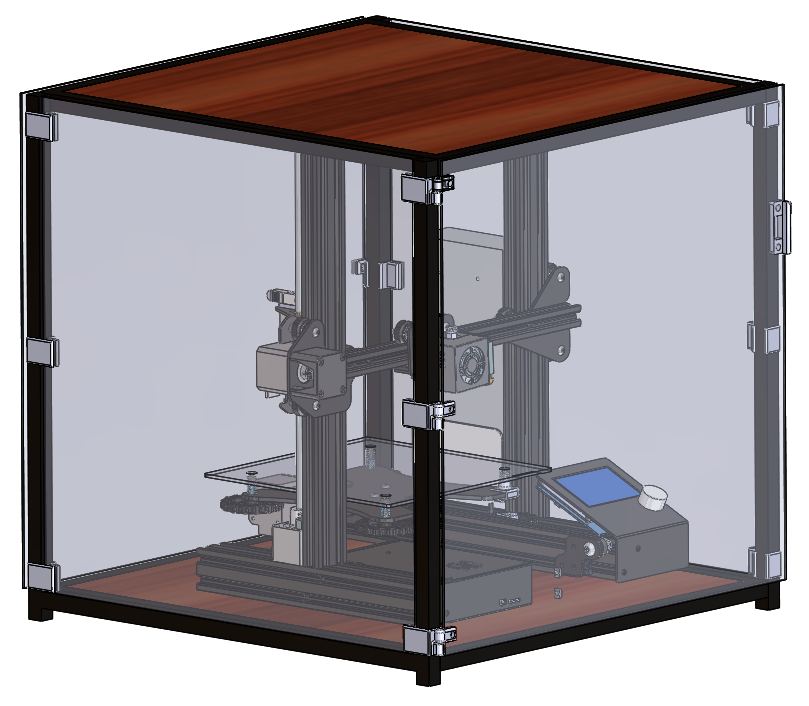
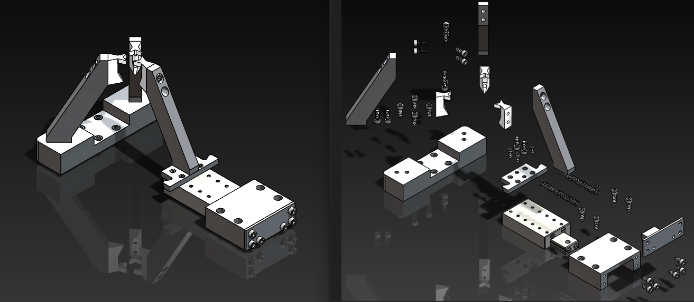
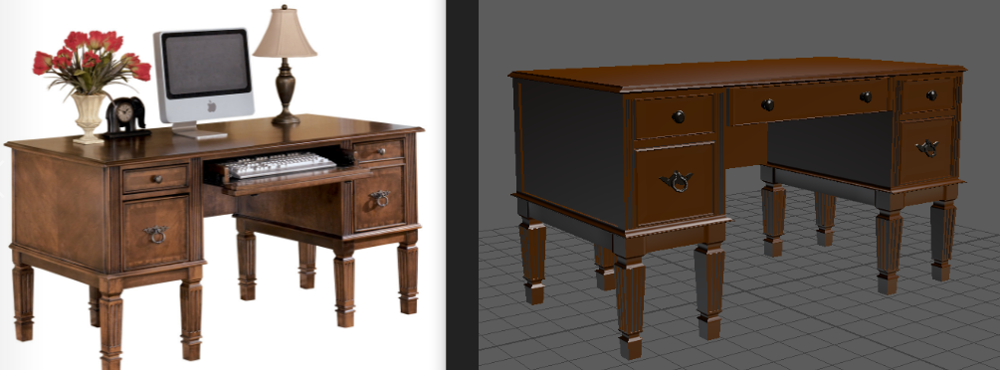
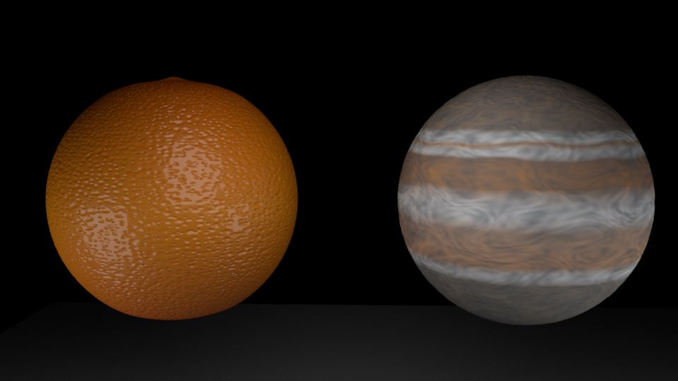

1 / 6

2 / 6

3 / 6

4 / 6

5 / 6

6 / 6

I am a Mechanical Engineer with a Bachelor's Degree from Clemson University, dedicated to improving the world through sustainable practices in both my personal and professional life. I am passionate about working with emerging technologies such as VR and 3D printing and continuously seek opportunities to enhance and innovate these fields.
Proficient in multiple programming languages, including C++ and Python, I am also highly skilled in design software such as SolidWorks and other CAD tools, with extensive experience in data management using PDM, PLM, Windchill, and 3DExperience.
Currently, I am advancing my 3D design and programming skills through a Master of Science in Digital Production Arts. This program allows me to effectively utilize my free time to further develop my interests in digital productions.
I excel in team environments and thrive on the challenge of finding creative and innovative solutions daily.
These retrofits were designed with the intention of being 3D printed to enable rabid prototyping and immediate implementation.
Using 3D printed material was feasible for these applications due to being in low-wear and low-stress environments in some cases.
In other cases, being 3D printed allowed for break-away funtionality when other components are more critical.
These fixtures were designed with the intention of holding parts of varying sizes in place while measuring with automated measuring tools and considering GD and T callouts, like CMMs.
I focus on making ergonomic designs that fully constrain degrees of freedom, while aslo considering manufacturability and assembly.
I work closely with a machinist to ensure that my design meets their expectations.
In my spare time, I design and 3D print some basic assemblies for simple functions as needed.
I have investigated a variety of 3D modeling softwares and found that AutoDesk Fusion 360 or OnShape have the most inclusive toolset for my projects.
While designing and printing these relatively simple projects, I also investigate and retrofit my 3D printer as needed to improve quality and repeatability.
These are some select examples of projects from my early years of learning CAD and working in engineering internships
The brain child of a team of three: Hayden, Derek, and me (Ben).
Summary: Demonstrate a mix of skills that we had accumulated in our careers so far. This game features a Bacteriophage that for some reason decides to fight Coronavirus-like enemies. After each stage is completed, the field grows!
This game features randomly generated obstacles, collectibles, and enemies. The enemies have some AI path finding and seek to destroy the Phage.
I created this game with the goal of implementing some crane behaviors.
Rather than creating a standard crane, I thought that it would be amusing to make a spider with the front legs behaving as cranes. This yielded an end result that was more complicated than necessary, yet amusing regardless.
Summary: Pick up the flies that jiggle around randomly, trying to escape their binds. You can crawl around, then switch modes or switch legs which behave as a "crane game" and attempt to grab the flies and eat them.
I created this game with the goal of demonstrating basic controls and spawning objects in a maze-like experience.
Of course, I tried to put an interesting spin on it... I am egg-static at the results!
Summary: Play as an egg rolling through a "fridge" to gather ingredients. The fridge opens after collecting enough items to allow exiting the maze and features randomized locations for collectibles.